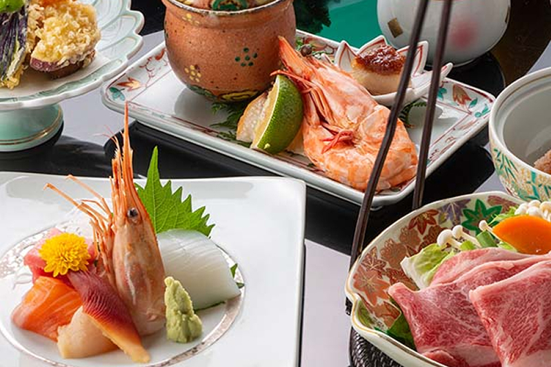

黒川温泉の自然に抱かれて、
星空を楽しむ温泉宿
春夏秋冬。
どの季節にお越しいただいても四季折々様々な表情を
楽しませてくれる自然あふれる風景が自慢です。
すぐそばを流れる筑後川の源流のせせらぎと共に
温泉に浸かり日々の疲れや喧騒を忘れ、これ以上ない癒しを与えてくれます。

お部屋
客室をあらたに整え、最大8名様までご宿泊いただける離れ・大部屋をご用意いたしました。
ご家族やグループでのご滞在にも、ゆとりある時間をお過ごしいただけます。
春夏秋冬の気配に包まれる客室。
八畳から十畳、二間続き、露天風呂付など、多彩な設えを揃えております。

お料理
自然に恵まれた土地で育った旬の食材を、料理人が心を込めて仕立てた会席料理。
味わいだけでなく、器や盛り付けにも趣を大切にしております。
季節の恵みを五感で味わう、花玄庵ならではのひとときをお楽しみください。

温泉
当館の泉質は「美人の湯」とも称される、やわらかな肌触りの炭酸水素塩泉です。
夜には灯りに照らされ、非日常の空間でゆったりとしたひとときをお楽しみいただけます。
入湯手形もご利用いただけますので、気軽に温泉巡りもお楽しみください。